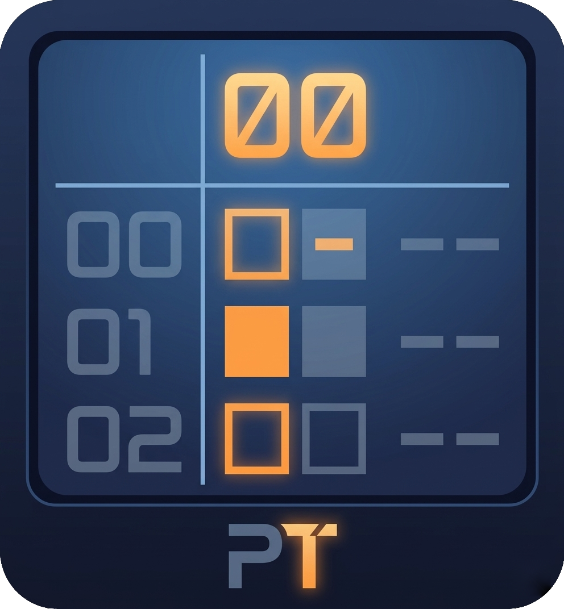

// cross-platform joystick-driven music-tracker
PokeTrack is a music tracker built for joystick input first. Input is consistent and fast once you learn it. Most actions are a single button plus a direction, so you can stay heads-down in the pattern editor without reaching for a mouse. It runs in the browser and on Linux-based handheld consoles as well as mac / windows / linux desktop.
One-click install, auto-updates, and supports continued development.
Run PokeTrack right in your browser, no install needed.
Open-source development and build-releases on GitHub.
Tutorials and song demos on YouTube.
You should be able to track quickly with a joystick, or keys. Once it clicks, it's meant to be fast and consistent. █